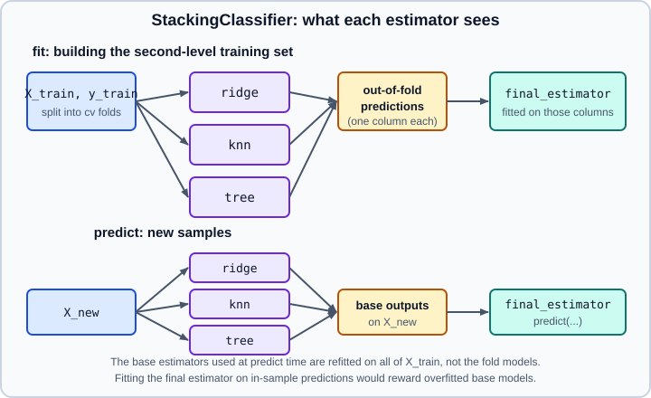

Voting, Stacking & Multiclass
|
This content was generated with the assistance of AI and should be verified against the official documentation before being relied on in production. |
Two separate ideas share this page because they both wrap other estimators. Voting and stacking combine several different models to predict the same target. The multiclass and multioutput meta-estimators turn a single-target binary classifier into a model for many classes, many labels or many targets. This page targets scikit-learn 1.9, with NumPy 2.5 and pandas 3.1, and it was checked in October 2026. Examples target Python 3.13 or 3.14. Every example was run on Python 3.13.18, NumPy 2.5.4, pandas 3.1.0 and scikit-learn 1.9.1; the printed output is real and may differ slightly with other versions or seeds. The ensembles that build many copies of one algorithm (bagging, forests, boosting) are on Random Forests & Bagging and Gradient Boosting & HistGradientBoosting. The package is installed as scikit-learn and imported as sklearn.
Voting
A voting ensemble trains several conceptually different models on the same data and combines their predictions. It helps when the models are about equally good and make different mistakes, so that their errors partly cancel. It does not help, and can hurt, when one model is clearly better than the others.
Hard and soft voting
VotingClassifier has two modes:
-
voting="hard"takes the majority of the predicted labels. With a tie, the class that sorts first (ascending label order) wins. -
voting="soft"sums the predicted class probabilities, optionally multiplied by per-modelweights, and picks the class with the highest sum. Every estimator must implementpredict_proba. Soft voting is usually better because it uses each model’s confidence, and it works best with reasonably calibrated probabilities (see Probability Calibration).
For three classifiers with equal weights and these probabilities for a sample, the weighted average is the mean of each column and the winner is class 2, although classifier 2 alone would have picked class 1:
| Classifier | Class 1 | Class 2 | Class 3 |
|---|---|---|---|
Classifier 1 |
0.2 |
0.5 |
0.3 |
Classifier 2 |
0.6 |
0.3 |
0.1 |
Classifier 3 |
0.3 |
0.4 |
0.3 |
Average |
0.37 |
0.40 |
0.23 |
from sklearn.datasets import load_iris
from sklearn.ensemble import RandomForestClassifier, VotingClassifier
from sklearn.linear_model import LogisticRegression
from sklearn.model_selection import cross_val_score
from sklearn.naive_bayes import GaussianNB
X, y = load_iris(return_X_y=True)
X = X[:, 1:3] # two features keep the problem a little hard
lr = LogisticRegression(random_state=1)
rf = RandomForestClassifier(n_estimators=50, random_state=1)
gnb = GaussianNB()
estimators = [("lr", lr), ("rf", rf), ("gnb", gnb)]
hard = VotingClassifier(estimators, voting="hard")
soft = VotingClassifier(estimators, voting="soft", weights=[2, 5, 1])
for name, model in [("lr", lr), ("rf", rf), ("gnb", gnb), ("hard vote", hard), ("soft vote", soft)]:
scores = cross_val_score(model, X, y, cv=5)
print(f"{name:10s} {scores.mean():.3f} +/- {scores.std():.3f}")lr 0.953 +/- 0.040
rf 0.940 +/- 0.039
gnb 0.913 +/- 0.040
hard vote 0.953 +/- 0.040
soft vote 0.953 +/- 0.040On this small data set the ensemble matches its best member and beats the worst, which is the typical outcome: voting buys robustness more often than raw accuracy. The fitted ensemble exposes its fitted members and lets you inspect what each one produced:
import numpy as np
soft.fit(X, y)
print(list(soft.named_estimators_), soft.classes_)
print("transform shape (flatten_transform=True):", soft.transform(X[:2]).shape)
# soft voting by hand: weighted mean of the members' probabilities
members = np.array([estimator.predict_proba(X[:1]) for estimator in soft.estimators_])
weights = np.array([2, 5, 1])
print((members * weights[:, None, None]).sum(axis=0) / weights.sum())
print(soft.predict_proba(X[:1]))['lr', 'rf', 'gnb'] [0 1 2]
transform shape (flatten_transform=True): (2, 9)
[[9.95509032e-01 4.49095929e-03 8.92427675e-09]]
[[9.95509032e-01 4.49095929e-03 8.92427675e-09]]transform returns the member outputs (labels for hard voting, probabilities for soft voting, flattened to (n_samples, n_estimators * n_classes) unless flatten_transform=False). A member can be removed without rebuilding the list by setting it to "drop" with set_params(gnb="drop").
Tuning an ensemble
Because VotingClassifier is a meta-estimator, its members' hyperparameters are reached with the name__parameter syntax, so a grid search can tune the whole ensemble at once:
from sklearn.model_selection import GridSearchCV
iris_X, iris_y = load_iris(return_X_y=True)
eclf = VotingClassifier([("lr", LogisticRegression(max_iter=1000, random_state=1)),
("rf", RandomForestClassifier(random_state=1)),
("gnb", GaussianNB())], voting="soft")
params = {"lr__C": [1.0, 100.0], "rf__n_estimators": [20, 200]}
grid = GridSearchCV(estimator=eclf, param_grid=params, cv=5).fit(iris_X, iris_y)
print(grid.best_params_, round(grid.best_score_, 3)){'lr__C': 1.0, 'rf__n_estimators': 200} 0.96The same syntax applies to nested parameters (rf__max_depth) and is explained on get_params, set_params & clone. Weights can also be searched, but with a handful of members it is rarely worth the extra variance.
VotingRegressor
VotingRegressor averages the predictions of several regressors, with optional weights. The example below shows that an average is not guaranteed to beat its best member: on the diabetes data the plain linear model is better than the blend.
from sklearn.datasets import load_diabetes
from sklearn.ensemble import GradientBoostingRegressor, RandomForestRegressor, VotingRegressor
from sklearn.linear_model import LinearRegression
from sklearn.model_selection import cross_val_score
X, y = load_diabetes(return_X_y=True)
r1 = GradientBoostingRegressor(random_state=1)
r2 = RandomForestRegressor(random_state=1)
r3 = LinearRegression()
ensemble = VotingRegressor([("gb", r1), ("rf", r2), ("lr", r3)])
for name, model in [("gb", r1), ("rf", r2), ("lr", r3), ("voting", ensemble)]:
print(name, round(cross_val_score(model, X, y, cv=5, scoring="r2").mean(), 3))gb 0.408
rf 0.424
lr 0.482
voting 0.467Stacking
Stacked generalisation does not average the members; it learns how to combine them. The predictions of the base estimators become the input features of a final estimator, which is trained to predict the target from them. The final estimator can learn that one model is trustworthy in some regions and another elsewhere.

The essential detail is how the second-level training set is built. If the base estimators predicted on the same rows they were fitted on, an overfitted model such as a deep forest would look nearly perfect and the final estimator would trust it too much. StackingClassifier and StackingRegressor avoid this: the final estimator is trained on predictions produced by cross_val_predict (the cv parameter, five folds by default, stratified for classifiers), while the base estimators are then refitted on the whole training set and are the ones used at prediction time.
from sklearn.datasets import load_diabetes
from sklearn.ensemble import GradientBoostingRegressor, StackingRegressor
from sklearn.linear_model import LassoCV, RidgeCV
from sklearn.metrics import r2_score
from sklearn.model_selection import train_test_split
from sklearn.neighbors import KNeighborsRegressor
X, y = load_diabetes(return_X_y=True)
X_train, X_test, y_train, y_test = train_test_split(X, y, random_state=42)
estimators = [("ridge", RidgeCV()),
("lasso", LassoCV(random_state=42)),
("knr", KNeighborsRegressor(n_neighbors=20, metric="euclidean"))]
final_estimator = GradientBoostingRegressor(n_estimators=25, subsample=0.5, min_samples_leaf=25,
max_features=1, random_state=42)
reg = StackingRegressor(estimators=estimators, final_estimator=final_estimator).fit(X_train, y_train)
print("stack R2:", round(r2_score(y_test, reg.predict(X_test)), 2))
for name, model in reg.named_estimators_.items():
print(f" {name} R2: {r2_score(y_test, model.predict(X_test)):.2f}")
print(reg.transform(X_test[:3]).round(0))stack R2: 0.53
ridge R2: 0.49
lasso R2: 0.49
knr R2: 0.47
[[142. 138. 146.]
[180. 183. 152.]
[140. 132. 158.]]transform returns the base predictions, one column per estimator, which is what the final estimator receives. In practice a stack predicts about as well as its best member and sometimes better, at the price of training every member once per fold plus once on the full set.
The cost of getting stacking wrong
To see why the out-of-fold design matters, the next example builds the second level by hand from in-sample predictions and compares the learned weights with those of StackingClassifier:
import numpy as np
from sklearn.datasets import make_classification
from sklearn.ensemble import RandomForestClassifier, StackingClassifier
from sklearn.linear_model import LogisticRegression
from sklearn.model_selection import train_test_split
from sklearn.neighbors import KNeighborsClassifier
X, y = make_classification(n_samples=1500, n_features=20, n_informative=4, n_redundant=2,
flip_y=0.1, random_state=0)
X_tr, X_te, y_tr, y_te = train_test_split(X, y, random_state=0)
rf = RandomForestClassifier(n_estimators=200, random_state=0).fit(X_tr, y_tr)
knn = KNeighborsClassifier().fit(X_tr, y_tr)
# wrong: the final estimator sees in-sample predictions of an overfitted forest
train_features = np.c_[rf.predict_proba(X_tr)[:, 1], knn.predict_proba(X_tr)[:, 1]]
test_features = np.c_[rf.predict_proba(X_te)[:, 1], knn.predict_proba(X_te)[:, 1]]
manual = LogisticRegression().fit(train_features, y_tr)
print("manual in-sample stacking:", round(manual.score(test_features, y_te), 3), "weights", manual.coef_.round(1))
stack = StackingClassifier(
[("rf", RandomForestClassifier(n_estimators=200, random_state=0)), ("knn", KNeighborsClassifier())],
final_estimator=LogisticRegression(), cv=5,
).fit(X_tr, y_tr)
print("StackingClassifier: ", round(stack.score(X_te, y_te), 3), "weights", stack.final_estimator_.coef_.round(1))
print("forest alone", round(rf.score(X_te, y_te), 3), "| k-NN alone", round(knn.score(X_te, y_te), 3))manual in-sample stacking: 0.859 weights [[9.3 1.2]]
StackingClassifier: 0.856 weights [[5.8 1. ]]
forest alone 0.853 | k-NN alone 0.781The test accuracies are close on this data, so the damage is not visible in the score. It is visible in the weight given to the forest, which is inflated when the second level is fitted on its memorised training predictions. On data where the base models differ more in how much they overfit, the manual version generalises worse.
Stacking options
| Parameter | Behaviour |
|---|---|
|
List of |
|
A classifier (for |
|
|
|
Classifier only. |
|
If |
|
Parallelism over base estimators, and progress reporting. |
Three details are worth knowing. First, for a binary problem with predict_proba, the first probability column of each estimator is dropped, because the two columns are perfectly collinear. Second, stacks can be nested by making the final_estimator another Stacking* object. Third, passthrough=True lets the final estimator revisit the raw features, which helps when it is a flexible model and hurts when it is a linear model on many features.
from sklearn.datasets import make_classification
from sklearn.ensemble import RandomForestClassifier, StackingClassifier
from sklearn.linear_model import LogisticRegression
from sklearn.model_selection import train_test_split
X, y = make_classification(n_samples=1500, n_classes=3, n_informative=6, random_state=0)
X_a, X_b, y_a, y_b = train_test_split(X, y, random_state=0)
stack = StackingClassifier(
[("lr", LogisticRegression(max_iter=1000)), ("rf", RandomForestClassifier(n_estimators=100, random_state=0))],
final_estimator=LogisticRegression(max_iter=1000), stack_method="auto",
).fit(X_a, y_a)
print(stack.stack_method_, stack.transform(X_b[:2]).shape, round(stack.score(X_b, y_b), 3))
X2, y2 = make_classification(n_samples=500, random_state=0)
binary = StackingClassifier(
[("lr", LogisticRegression(max_iter=1000)), ("rf", RandomForestClassifier(n_estimators=20, random_state=0))]
).fit(X2, y2)
print("binary problem, two estimators:", binary.transform(X2[:2]).shape)['predict_proba', 'predict_proba'] (2, 6) 0.832
binary problem, two estimators: (2, 2)With three classes each estimator contributes three columns (six in total); in the binary case each contributes one.
Pre-fitted base models
Setting cv="prefit" (since 1.1) tells the stack that the base estimators are already fitted and must not be refitted. The final estimator is then trained on their predictions for whatever data you pass to fit. Those predictions are not cross-validated, so you must pass data the base models have not seen, otherwise the overfitting described above returns.
from sklearn.datasets import make_classification
from sklearn.ensemble import RandomForestClassifier, StackingClassifier
from sklearn.linear_model import LogisticRegression
from sklearn.model_selection import train_test_split
X, y = make_classification(n_samples=1500, random_state=0)
X_rest, X_test, y_rest, y_test = train_test_split(X, y, random_state=0)
X_train, X_hold, y_train, y_hold = train_test_split(X_rest, y_rest, random_state=1)
lr = LogisticRegression(max_iter=1000).fit(X_train, y_train)
rf = RandomForestClassifier(n_estimators=100, random_state=0).fit(X_train, y_train)
prefit = StackingClassifier([("lr", lr), ("rf", rf)], final_estimator=LogisticRegression(), cv="prefit")
prefit.fit(X_hold, y_hold) # the base models are not refitted
print(round(prefit.score(X_test, y_test), 3), prefit.estimators_[0] is lr)0.949 TrueThe FrozenEstimator wrapper (see FrozenEstimator) is the general way to keep a fitted model fixed inside pipelines and meta-estimators; here, cv="prefit" already covers the stacking case.
Choosing between averaging and stacking
| Voting | Stacking | |
|---|---|---|
Combination rule |
Fixed (majority or weighted mean) |
Learned by the final estimator |
Training cost |
One fit per member |
One fit per member per fold, plus one on all data, plus the final model |
Risk |
Little; may be no better than the best member |
Overfitting of the second level; needs enough data |
Interpretability |
Simple to explain |
The final model’s coefficients show each member’s role |
When to use |
Similar models of similar quality |
Models with complementary strengths and plenty of rows |
Start by checking whether a single well-tuned gradient-boosted model is already as good; the extra training and serving cost of an ensemble is only justified by a measurable improvement under cross-validation (Cross-Validation & Splitters). Evaluate the ensemble as a whole, never the members separately, because leakage is easy to introduce when parts are fitted on test data.
Multiclass and multioutput meta-estimators
The estimators in sklearn.multiclass and sklearn.multioutput are meta-estimators: you give each a base estimator, and it solves a harder problem by fitting a set of simpler ones. The first step is to know which problem you have. sklearn.utils.multiclass.type_of_target reports it:
| Problem | Targets | Values per target | type_of_target |
|---|---|---|---|
Multiclass classification |
1 |
more than 2 classes |
|
Multilabel classification |
more than 1 |
2 (0 or 1) |
|
Multiclass-multioutput classification |
more than 1 |
more than 2 |
|
Multioutput regression |
more than 1 |
continuous |
|
Multiclass classification
Every classifier in scikit-learn can do multiclass classification out of the box, so the sklearn.multiclass meta-estimators are only needed to experiment with a different decomposition or to use a binary-only algorithm. The user guide groups the built-in behaviour:
-
Natively multiclass: decision trees,
RandomForestClassifier,ExtraTreesClassifier,KNeighborsClassifier,GaussianNBandBernoulliNB,LinearDiscriminantAnalysis,MLPClassifier,RidgeClassifierandLogisticRegression(all solvers exceptliblinear). -
One-versus-one internally:
SVCandNuSVC. -
One-versus-rest internally:
GradientBoostingClassifier(which builds one tree sequence per class),SGDClassifier,PerceptronandLinearSVCwith its default setting.
The three strategies are:
| Strategy | How it works | Number of models | Notes |
|---|---|---|---|
|
One binary classifier per class against all the others |
|
Efficient and interpretable; gives |
|
One classifier per pair of classes, prediction by voting |
|
Each model sees only two classes' data, so it suits algorithms that scale badly with sample count (kernel methods); quadratic number of models |
|
Each class gets a binary code word from a random code book; one classifier per bit |
|
Error-correcting; |
from sklearn.datasets import load_iris
from sklearn.linear_model import LogisticRegression
from sklearn.model_selection import cross_val_score
from sklearn.multiclass import OneVsOneClassifier, OneVsRestClassifier, OutputCodeClassifier
from sklearn.svm import LinearSVC
X, y = load_iris(return_X_y=True)
candidates = {
"one-vs-rest (LinearSVC)": OneVsRestClassifier(LinearSVC(random_state=0)),
"one-vs-one (LinearSVC)": OneVsOneClassifier(LinearSVC(random_state=0)),
"output code (LinearSVC)": OutputCodeClassifier(LinearSVC(random_state=0), code_size=2, random_state=0),
"multinomial LogisticRegression": LogisticRegression(max_iter=1000),
"one-vs-rest LogisticRegression": OneVsRestClassifier(LogisticRegression(max_iter=1000)),
}
for name, model in candidates.items():
print(f"{name:32s} {cross_val_score(model, X, y, cv=5).mean():.3f}")
ovr = OneVsRestClassifier(LogisticRegression(max_iter=1000)).fit(X, y)
print(len(ovr.estimators_), ovr.classes_, ovr.predict_proba(X[:1]).round(3), ovr.predict_proba(X[:1]).sum().round(3))
ovo = OneVsOneClassifier(LinearSVC(random_state=0)).fit(X, y)
print("one-vs-one models:", len(ovo.estimators_), "decision_function shape:", ovo.decision_function(X[:1]).shape)
ecoc = OutputCodeClassifier(LinearSVC(random_state=0), code_size=2, random_state=0).fit(X, y)
print("code book shape:", ecoc.code_book_.shape)one-vs-rest (LinearSVC) 0.967
one-vs-one (LinearSVC) 0.980
output code (LinearSVC) 0.927
multinomial LogisticRegression 0.973
one-vs-rest LogisticRegression 0.940
3 [0 1 2] [[0.897 0.103 0. ]] 1.0
one-vs-one models: 3 decision_function shape: (1, 3)
code book shape: (3, 6)With code_size=2 and three classes the code book has six bits, so six binary models are fitted. The comparison shows no strategy dominating; the multinomial LogisticRegression is the best of its family here, which is why its former multi_class parameter is gone. In scikit-learn 1.9, LogisticRegression always uses the multinomial loss for three or more classes. If you want a one-vs-rest model, wrap it explicitly in OneVsRestClassifier, as above. For one-vs-rest, the predict_proba values are normalised so that each row sums to 1 in the multiclass case.
All three meta-estimators accept n_jobs to fit the binary problems in parallel, and OneVsRestClassifier and OneVsOneClassifier expose partial_fit when the base estimator does, for out-of-core learning (the first call must pass classes).
Multilabel classification
In multilabel classification each sample can carry any subset of the labels, for example the topics of a document. The target y is a binary matrix of shape (n_samples, n_classes) (dense or sparse), and each column is one label. Several estimators handle this natively (decision trees, RandomForestClassifier, KNeighborsClassifier, MLPClassifier, RidgeClassifier). For others there are three meta-estimators:
-
OneVsRestClassifierfits one binary classifier per column when it is given a binary indicator matrix. -
MultiOutputClassifierfits one classifier per output independently, and exposespredict_probaas a list with one array per output. -
ClassifierChainfits the classifiers in sequence; each one receives the original features plus the predictions of the previous ones in the chain, so it can model label dependencies. Theorderparameter sets the chain order ("random"is allowed) andorder_records it. Results depend on the order, which is why averaging several random chains is common.
from sklearn.datasets import make_multilabel_classification
from sklearn.ensemble import RandomForestClassifier
from sklearn.linear_model import LogisticRegression
from sklearn.multiclass import OneVsRestClassifier
from sklearn.multioutput import ClassifierChain, MultiOutputClassifier
Xm, Ym = make_multilabel_classification(n_samples=300, n_classes=4, random_state=0)
print(Ym[:3], Ym.shape)
ovr_ml = OneVsRestClassifier(LogisticRegression(max_iter=1000)).fit(Xm, Ym)
print(ovr_ml.predict(Xm[:3]))
moc = MultiOutputClassifier(RandomForestClassifier(n_estimators=30, random_state=0)).fit(Xm, Ym)
print(moc.predict(Xm[:2]), [p.shape for p in moc.predict_proba(Xm[:1])])
chain = ClassifierChain(LogisticRegression(max_iter=1000), order="random", random_state=0).fit(Xm, Ym)
print(chain.order_, chain.predict(Xm[:2]))[[1 0 1 0]
[0 0 0 0]
[1 0 1 0]] (300, 4)
[[1 0 0 0]
[0 0 0 0]
[1 1 1 0]]
[[1 0 1 0]
[0 0 0 0]] [(1, 2), (1, 2), (1, 2), (1, 2)]
[2 3 1 0] [[1. 0. 0. 0.]
[0. 0. 0. 0.]]Note that a row of zeros is a valid prediction (the sample has none of the labels), unlike in multiclass classification. Evaluate multilabel models with the multilabel averaging options of the metrics, such as average="macro", "micro" and "samples", described on Metrics & Scoring.
Multioutput regression and multiclass-multioutput
When there are several continuous targets, MultiOutputRegressor fits one regressor per column and RegressorChain fits them in sequence, feeding each prediction to the next. For several targets that each have more than two classes (the multiclass-multioutput case), MultiOutputClassifier is the meta-estimator to use; trees, forests and nearest-neighbour classifiers also support it natively.
import numpy as np
from sklearn.datasets import make_regression, load_iris
from sklearn.ensemble import GradientBoostingRegressor, RandomForestClassifier
from sklearn.multioutput import MultiOutputClassifier, MultiOutputRegressor, RegressorChain
from sklearn.utils.multiclass import type_of_target
Xr, Yr = make_regression(n_samples=200, n_features=5, n_targets=2, random_state=0)
mo = MultiOutputRegressor(GradientBoostingRegressor(random_state=0)).fit(Xr, Yr)
rc = RegressorChain(GradientBoostingRegressor(random_state=0)).fit(Xr, Yr)
print(mo.predict(Xr[:1]).shape, rc.predict(Xr[:1]).shape)
X, y = load_iris(return_X_y=True)
Y2 = np.c_[y, (X[:, 0] > 5.8).astype(int) * 2] # two targets, three classes in the first
mm = MultiOutputClassifier(RandomForestClassifier(n_estimators=30, random_state=0)).fit(X, Y2)
print(mm.predict(X[:2]))
print(type_of_target(y), type_of_target(Y2), type_of_target(Yr))(1, 2) (1, 2)
[[0 0]
[0 0]]
multiclass multiclass-multioutput continuous-multioutputMultiOutputRegressor and MultiOutputClassifier assume the targets are independent given the features, and they multiply training time by the number of outputs. Many regressors (linear models, trees, forests, nearest neighbours) already accept a two-dimensional y natively and are cheaper than the wrapper.
Pitfalls and notes
-
Averaging weak or correlated models adds little. Voting a gradient-boosted model with a forest trained on the same features usually changes the result by a small amount.
-
Soft voting needs probabilities.
SVConly providespredict_probawhenprobability=True, and that option is deprecated in scikit-learn 1.9 and scheduled for removal in 1.11 (the warning recommendsCalibratedClassifierCVaround the SVC). The deprecation warning appears even when the argument is passed asFalse. -
Do not stack on predictions the base model has memorised. Use the built-in
cv, or hold out a set withcv="prefit". -
Evaluate the whole ensemble with cross-validation or a held-out set; stacking nests cross-validation internally and can be slow, so reduce
cvorn_jobsaccordingly. -
Class order in
ClassifierChainmatters, and so does the code book ofOutputCodeClassifier; fixrandom_statefor repeatable results. -
Pipelines. Put preprocessing inside each member or before the ensemble; see Pipelines and Common Pitfalls.
-
Naming. Estimator names in
estimatorsmust not contain double underscores, because they would collide with the parameter-routing syntax.
Older examples may show boosting with base_estimator= (renamed to estimator= in 1.2 and removed in 1.4), LogisticRegression(multi_class="ovr") (removed; use OneVsRestClassifier) and CalibratedClassifierCV(cv="prefit") (replaced by FrozenEstimator in 1.6). Check What’s New for the full list.
See also
-
Gradient Boosting & HistGradientBoosting and Random Forests & Bagging for the members most often combined.
-
Linear Models & Logistic Regression for the multinomial loss and its former
multi_classparameter. -
Support Vector Machines for the one-versus-one strategy used inside
SVC. -
Model Evaluation & Validation for metrics and validation of ensembles.
References
-
scikit-learn user guide, Ensembles (voting, stacking): https://scikit-learn.org/stable/modules/ensemble.html
-
scikit-learn user guide, Multiclass and multioutput algorithms: https://scikit-learn.org/stable/modules/multiclass.html
-
VotingClassifier: https://scikit-learn.org/stable/modules/generated/sklearn.ensemble.VotingClassifier.html -
VotingRegressor: https://scikit-learn.org/stable/modules/generated/sklearn.ensemble.VotingRegressor.html -
StackingClassifier: https://scikit-learn.org/stable/modules/generated/sklearn.ensemble.StackingClassifier.html -
StackingRegressor: https://scikit-learn.org/stable/modules/generated/sklearn.ensemble.StackingRegressor.html -
OneVsRestClassifier: https://scikit-learn.org/stable/modules/generated/sklearn.multiclass.OneVsRestClassifier.html -
OneVsOneClassifier: https://scikit-learn.org/stable/modules/generated/sklearn.multiclass.OneVsOneClassifier.html -
OutputCodeClassifier: https://scikit-learn.org/stable/modules/generated/sklearn.multiclass.OutputCodeClassifier.html -
MultiOutputClassifier,MultiOutputRegressor,ClassifierChainandRegressorChain: https://scikit-learn.org/stable/api/sklearn.multioutput.html -
D. H. Wolpert, "Stacked generalization", Neural Networks 5(2), 1992